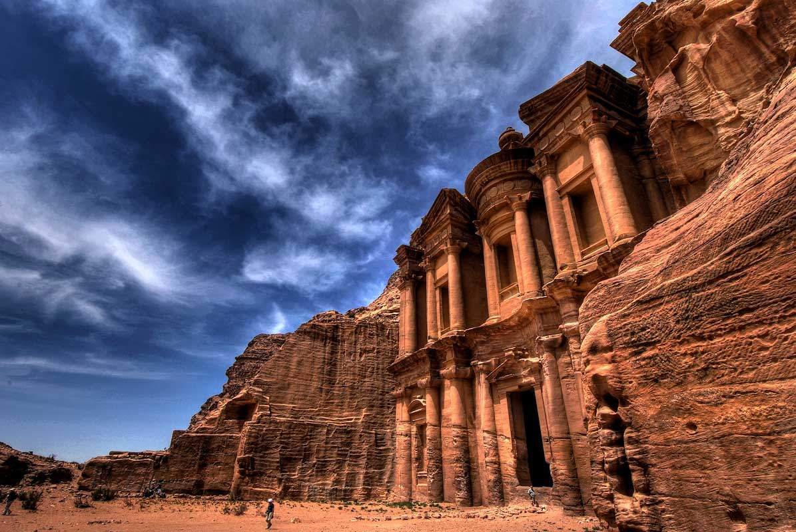

Петра

Петра, расположенная в южной Иордании, является одной из самых известных и культурно значимых достопримечательностей. Город был основан в VI веке до н.э. и стал столицей племени набатеев, а позже Набатейского царства. Петра известна своей уникальной архитектурой, высеченной в скалах, и стала одной из семи новых чудес света в 2007 году. Город был значимым торговым центром и оказал значительное влияние на историю региона.